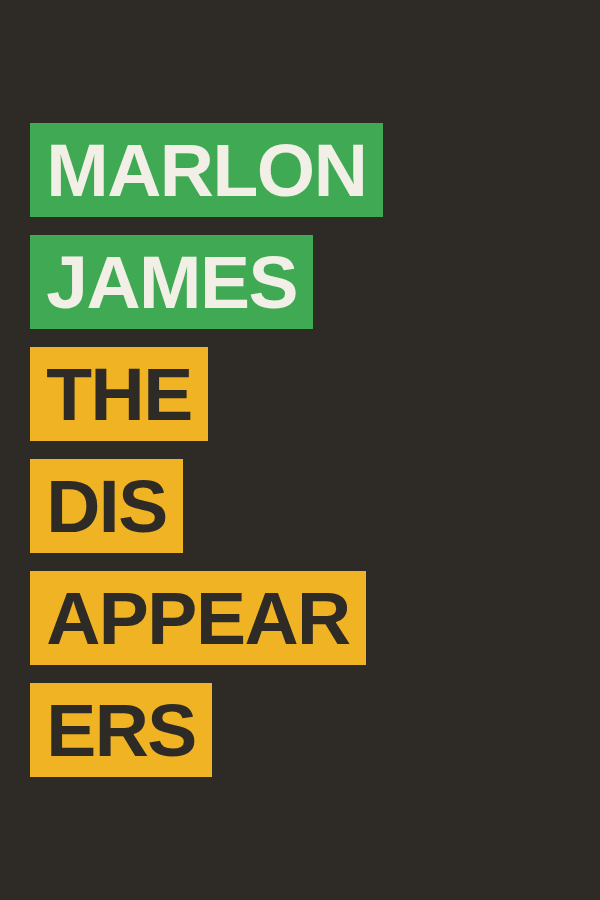
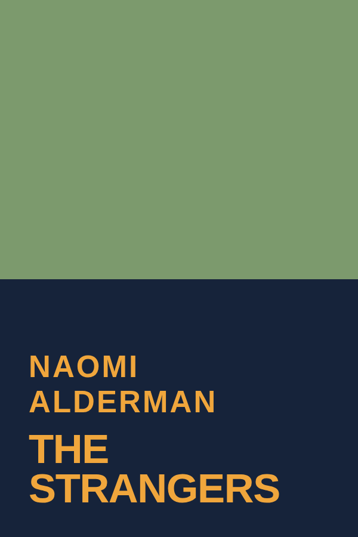
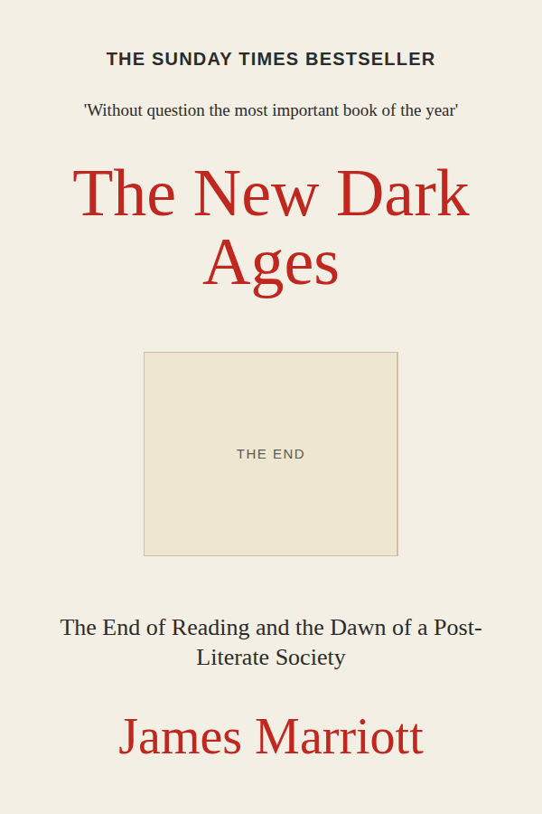

The books our reviewers have been arguing about, chosen by the editors and dispatched within two working days.



Four sides, forty titles, the whole shop’s front table in the space of one. Give it a flick.